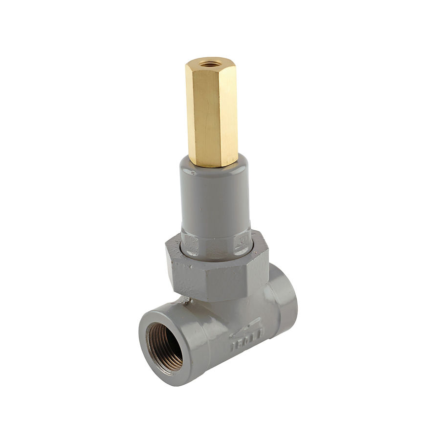
Fisher 1805 Series Backpressure Regulators and Relief Valves
Van xả lò xo cho farm tap; đặt áp 0,34–8,6 bar; khí tự nhiên, propane; NPT 3/4–2; khí chua.
Van điều áp ngược và van xả Fisher 63EG, 289, 1805, 1808, MR98, EZR relief – duy trì áp suất phía trước và bảo vệ quá áp.
Fast Group cung cấp van xả & điều áp ngược Fisher chính hãng, đủ CO/CQ. Mỗi model có trang riêng với mô tả, biến thể, tài liệu kỹ thuật và hướng dẫn gửi RFQ.

Van xả lò xo cho farm tap; đặt áp 0,34–8,6 bar; khí tự nhiên, propane; NPT 3/4–2; khí chua.
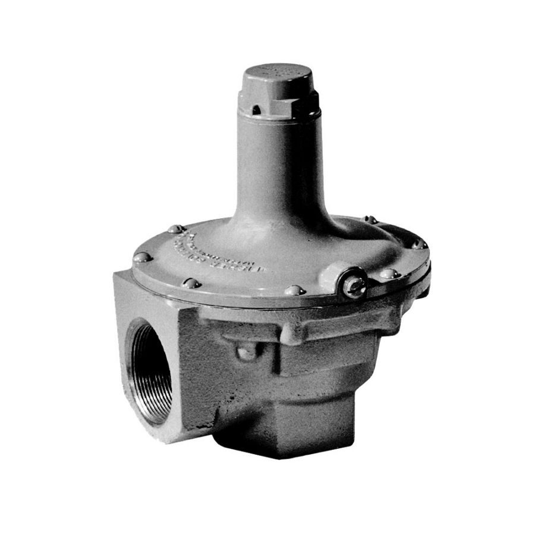
Van xả tiết lưu/regulator áp ngược lò xo tải; setpoint 12 mbar–5,2 bar; kết nối 1/4–2 NPT.

Van xả pilot / điều áp ngược cho khí, lỏng, hơi; kín Class VI, FFKM/EPDM chịu nhiệt, NACE.
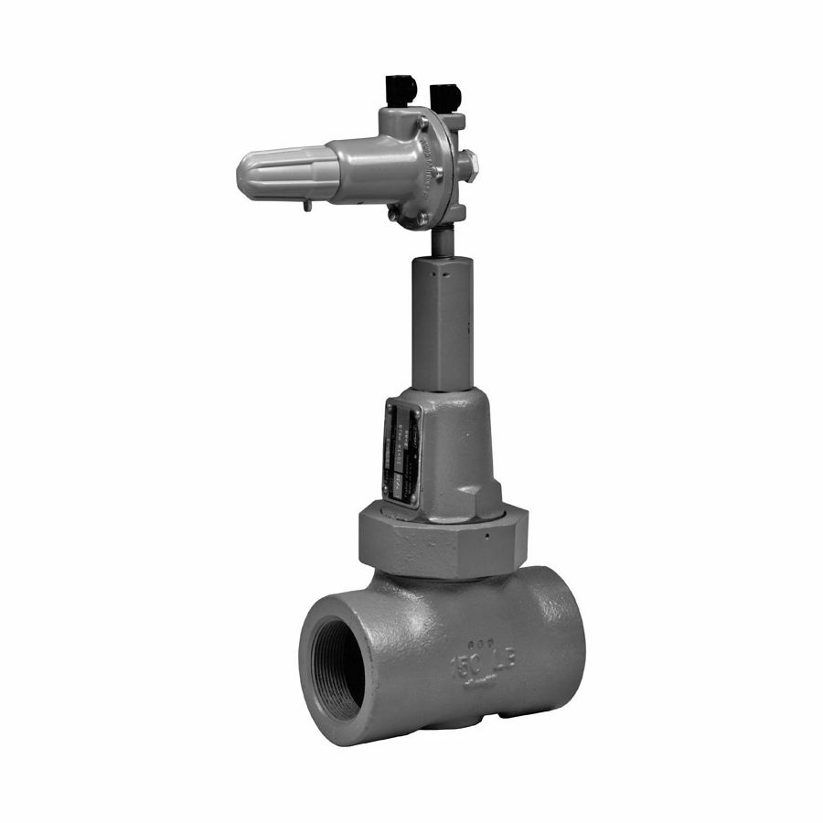
Van xả / điều áp ngược Fisher 1805P. The 1805P‑6358 is a low‑cost pilot‑operated relief valve. It offers 10–100 psig settings adjustable via the…
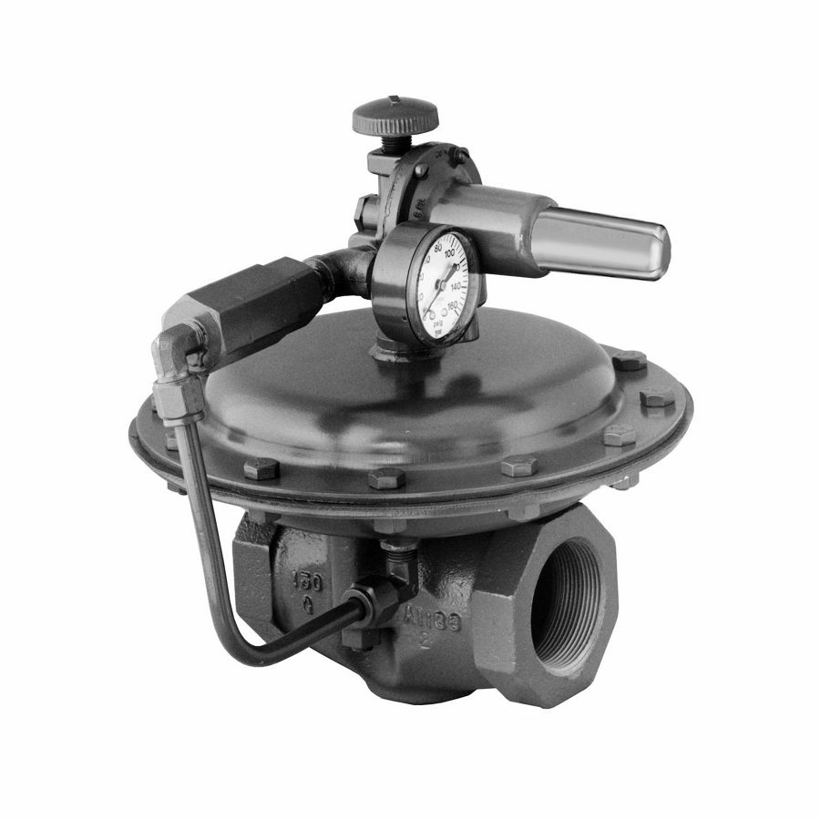
Van xả / điều áp ngược Fisher 1808. Types 1808 and 1808A are compact, economical backpressure regulators. They serve gas or liquid systems for…
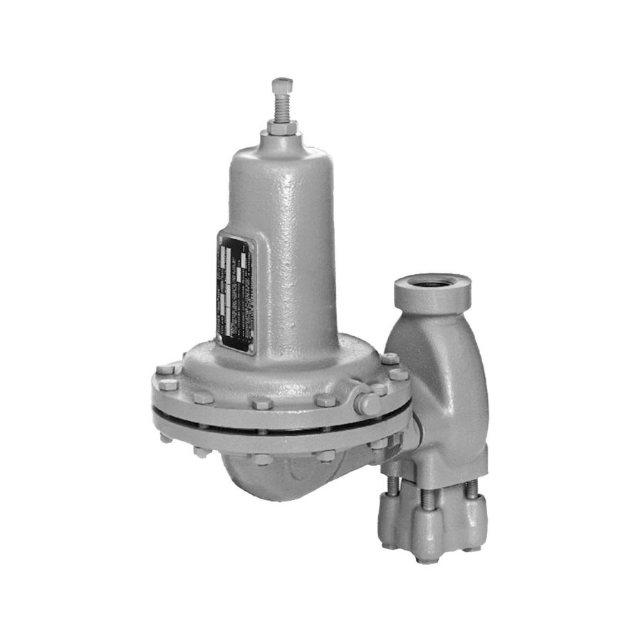
Van xả / điều áp ngược Fisher 630R. The 630R is a relief valve for gas backpressure control. Low‑pressure units give accurate control.…
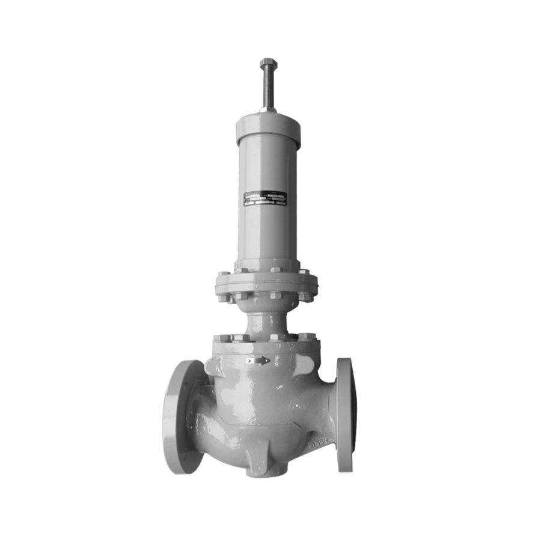
Van xả / điều áp ngược Fisher CT88. Type CT88 regulator maintains LACT skid backpressure. High flow boosts measurement accuracy and efficiency.
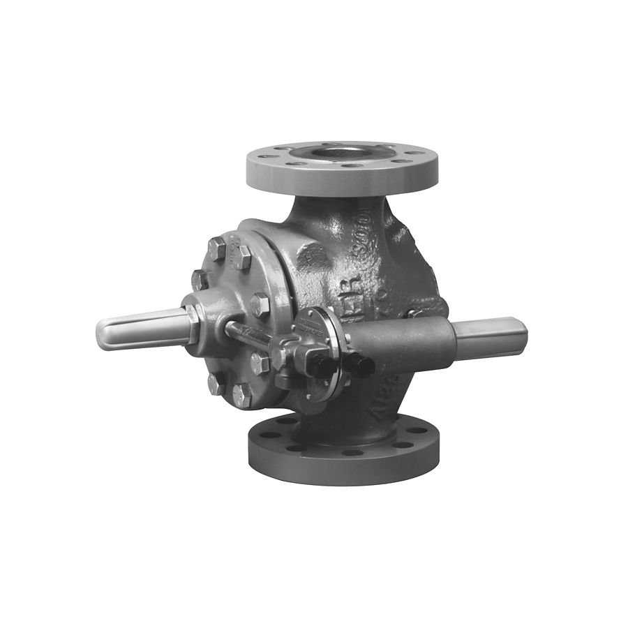
Van xả / điều áp ngược Fisher EZR Relief. EZR valve serves as relief or backpressure control in gas systems. It delivers quiet, tight shutoff and long…
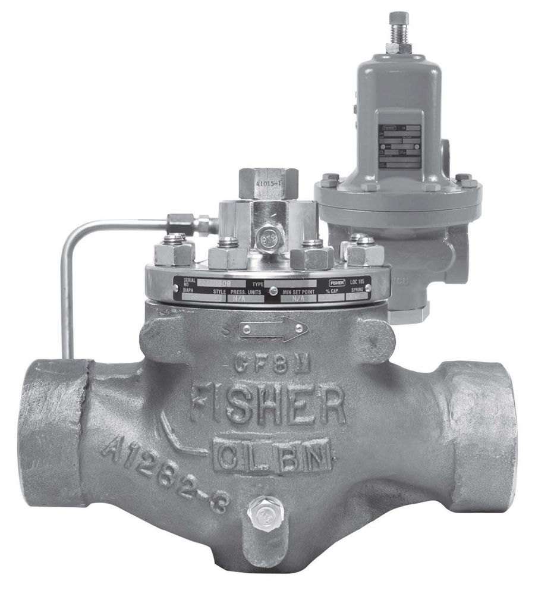
Van xả / điều áp ngược Fisher LR128. LR128 is a pilot‑operated liquid relief/backpressure regulator offering smooth operation and tight shutoff.…
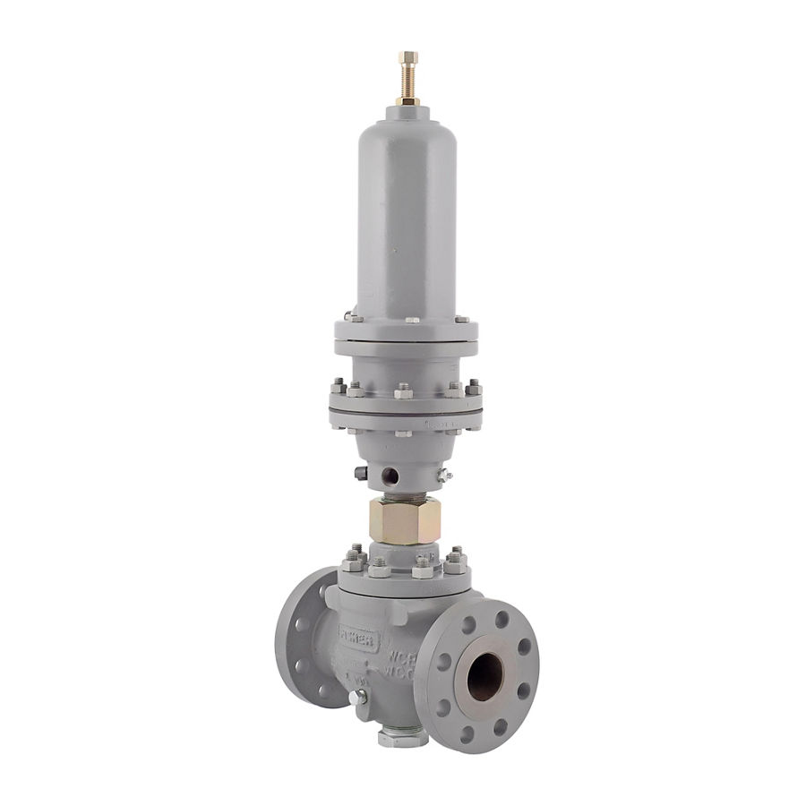
Van xả / điều áp ngược Fisher MR108. MR108 is a high‑capacity backpressure regulator for liquid, air, or gas. It suits fast‑response,…
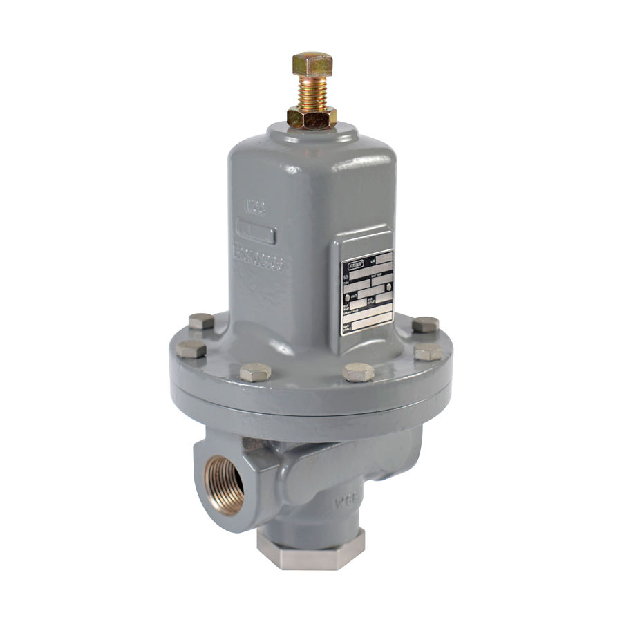
Van xả / điều áp ngược Fisher MR98. MR98 regulators handle backpressure or relief in liquid, gas, air, and steam. Direct‑operated or…
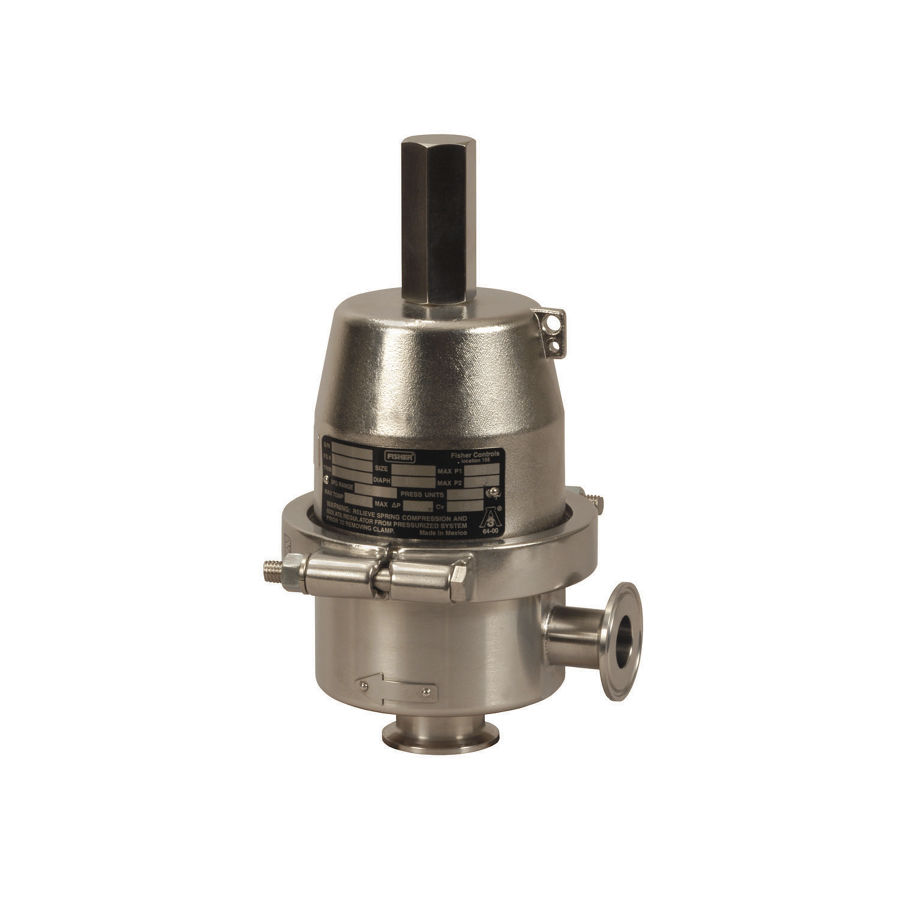
Van xả / điều áp ngược Fisher SR8. SR8 is a compact sanitary backpressure regulator for pharma, biotech, and food use. It handles steam,…
Trụ sở TP. Hồ Chí Minh và văn phòng Vũng Tàu đều tiếp nhận RFQ, tư vấn cấu hình và bàn giao bộ chứng từ CO/CQ; bảo hành chính hãng 12 tháng kể từ ngày giao hàng. Yêu cầu gửi trong giờ làm việc được phản hồi trong cùng ngày; giao hàng toàn quốc.
150/41 Nguyễn Cư Trinh, P. Cầu Ông Lãnh
51 Lê Văn Lộc, P. Vũng Tàu